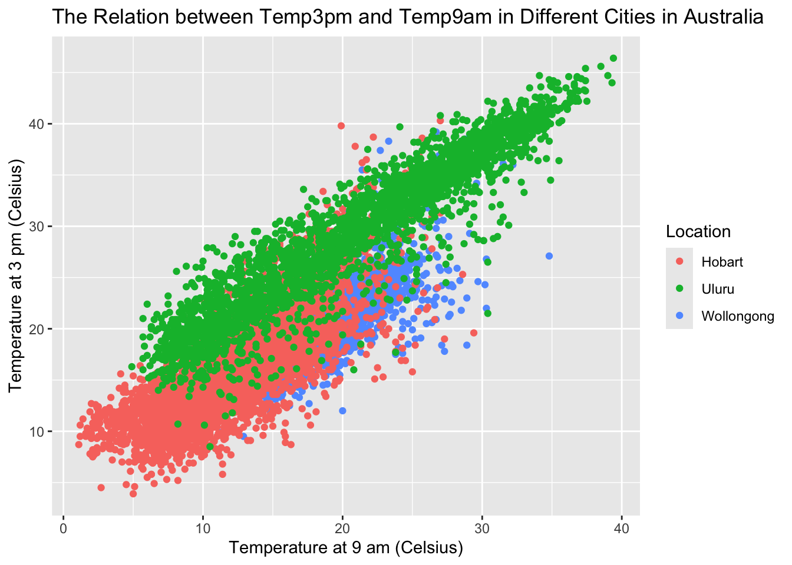
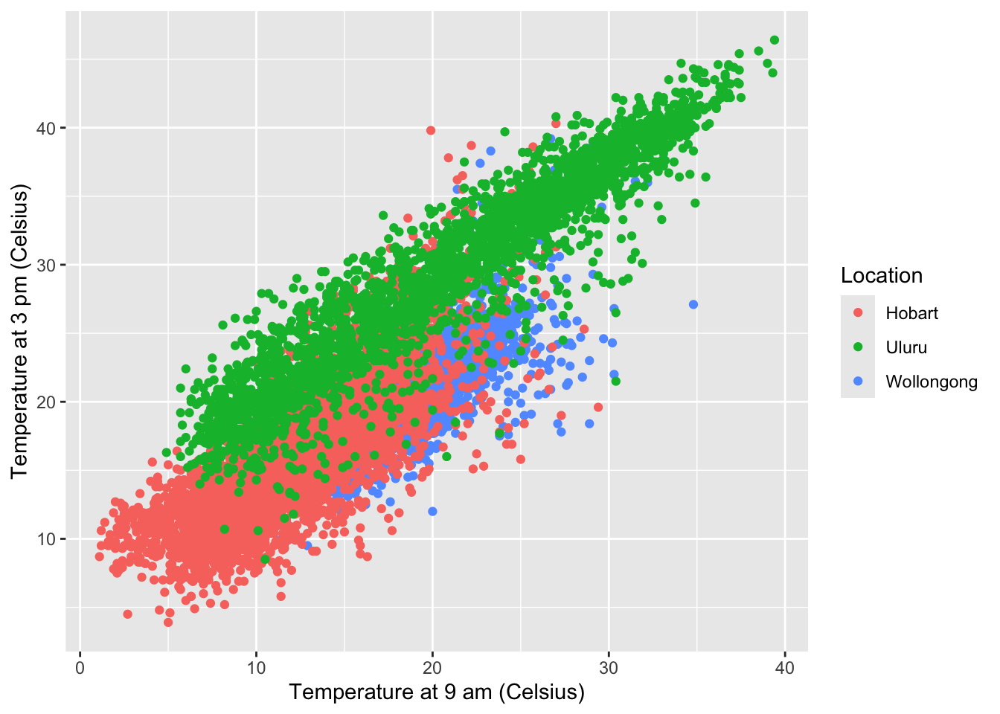
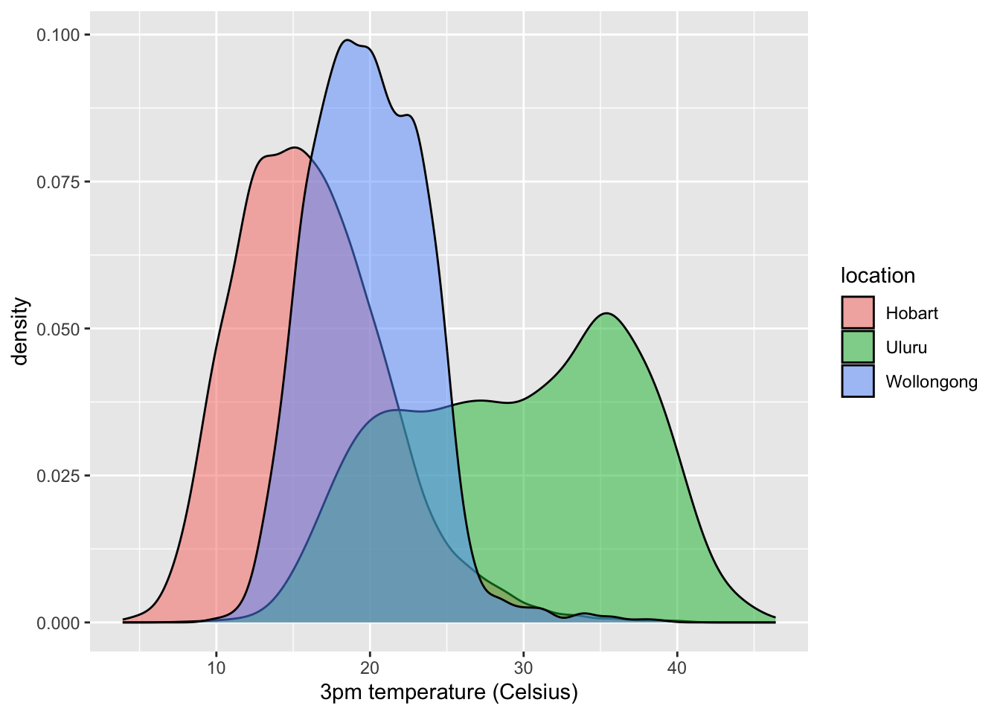
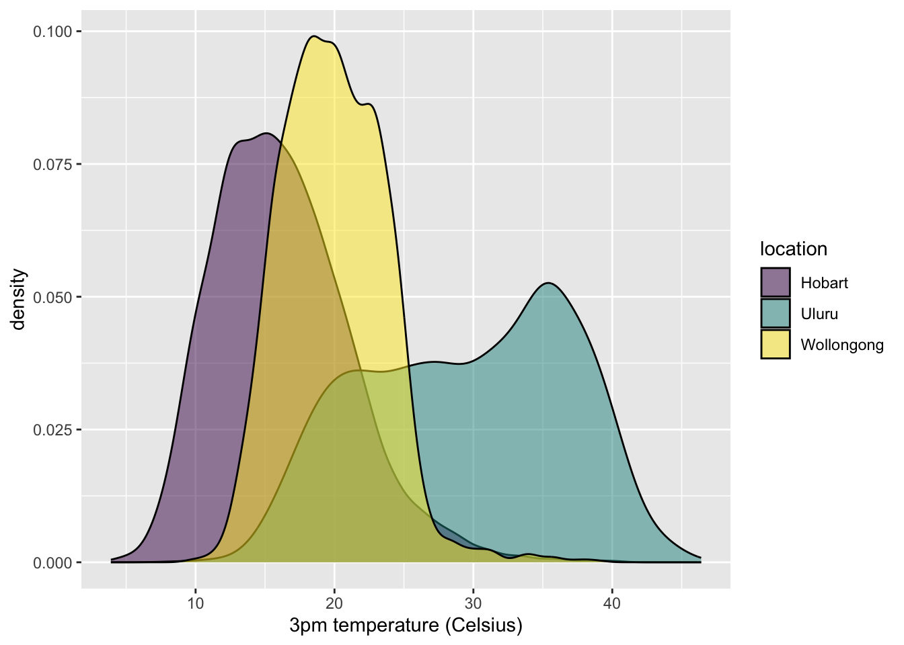

── Attaching core tidyverse packages ──────────────────────── tidyverse 2.0.0 ──
✔ dplyr 1.1.4 ✔ readr 2.1.5
✔ forcats 1.0.0 ✔ stringr 1.5.0
✔ ggplot2 3.5.1 ✔ tibble 3.2.1
✔ lubridate 1.9.3 ✔ tidyr 1.3.1
✔ purrr 1.0.2
── Conflicts ────────────────────────────────────────── tidyverse_conflicts() ──
✖ dplyr::filter() masks stats::filter()
✖ dplyr::lag() masks stats::lag()
ℹ Use the conflicted package (<http://conflicted.r-lib.org/>) to force all conflicts to become errors
library(rattle)
Loading required package: bitops
Warning: package 'bitops' was built under R version 4.3.3
Rattle: A free graphical interface for data science with R.
Version 5.5.1 Copyright (c) 2006-2021 Togaware Pty Ltd.
Type 'rattle()' to shake, rattle, and roll your data.
ggplot(weather, aes(y = temp3pm, x = temp9am, color = location)) +geom_point() +labs(x ="Temperature at 9 am (Celsius)", y ="Temperature at 3 pm (Celsius)", title ="The Relation between Temp3pm and Temp9am in Different Cities in Australia", color ="Location")
Warning: Removed 103 rows containing missing values or values outside the scale range
(`geom_point()`).

6.1.2 b
“The Relation between Temp3pm and Temp9am in Different Cities in Australia”
ggplot(weather, aes(y = temp3pm, x = temp9am, color = location)) +geom_point() +labs(x ="Temperature at 9 am (Celsius)", y ="Temperature at 3 pm (Celsius)", color ="Location")
Warning: Removed 103 rows containing missing values or values outside the scale range
(`geom_point()`).

6.2 Exercise 2
ggplot(weather, aes(x = temp3pm, fill = location)) +geom_density(alpha =0.5) +labs(x ="3pm temperature (Celsius)")
Warning: Removed 57 rows containing non-finite outside the scale range
(`stat_density()`).

6.2.1 a
It is the distribution of 3pm temperature of 3 cities in Australia.
ggplot(weather, aes(x = temp3pm, fill = location)) +geom_density(alpha =0.5) +labs(x ="3pm temperature (Celsius)")
Warning: Removed 57 rows containing non-finite outside the scale range
(`stat_density()`).
6.2.2 b
Hobart and Uluru will be too similar too each other.
6.2.3 c
ggplot(weather, aes(x = temp3pm, fill = location)) +geom_density(alpha =0.5) +labs(x ="3pm temperature (Celsius)") +scale_fill_viridis_d()
Warning: Removed 57 rows containing non-finite outside the scale range
(`stat_density()`).

Source Code
---title: "Effective viz"---```{r}library(tidyverse)library(rattle)data(weatherAUS)``````{r}weather <- weatherAUS %>%filter(Location %in%c("Hobart", "Uluru", "Wollongong")) %>%mutate(temp9am = Temp9am, temp3pm = Temp3pm, location = Location) ```## Exercise 1### a```{r}ggplot(weather, aes(y = temp3pm, x = temp9am, color = location)) +geom_point() +labs(x ="Temperature at 9 am (Celsius)", y ="Temperature at 3 pm (Celsius)", title ="The Relation between Temp3pm and Temp9am in Different Cities in Australia", color ="Location") ```### b"The Relation between Temp3pm and Temp9am in Different Cities in Australia"```{r}ggplot(weather, aes(y = temp3pm, x = temp9am, color = location)) +geom_point() +labs(x ="Temperature at 9 am (Celsius)", y ="Temperature at 3 pm (Celsius)", color ="Location") ```## Exercise 2```{r}ggplot(weather, aes(x = temp3pm, fill = location)) +geom_density(alpha =0.5) +labs(x ="3pm temperature (Celsius)") ```### aIt is the distribution of 3pm temperature of 3 cities in Australia.```{r, fig.alt = "distribution of 3pm temperature of 3 cities in Australia"}ggplot(weather, aes(x = temp3pm, fill = location)) +geom_density(alpha =0.5) +labs(x ="3pm temperature (Celsius)") ```### bHobart and Uluru will be too similar too each other.### c```{r}ggplot(weather, aes(x = temp3pm, fill = location)) +geom_density(alpha =0.5) +labs(x ="3pm temperature (Celsius)") +scale_fill_viridis_d() ```